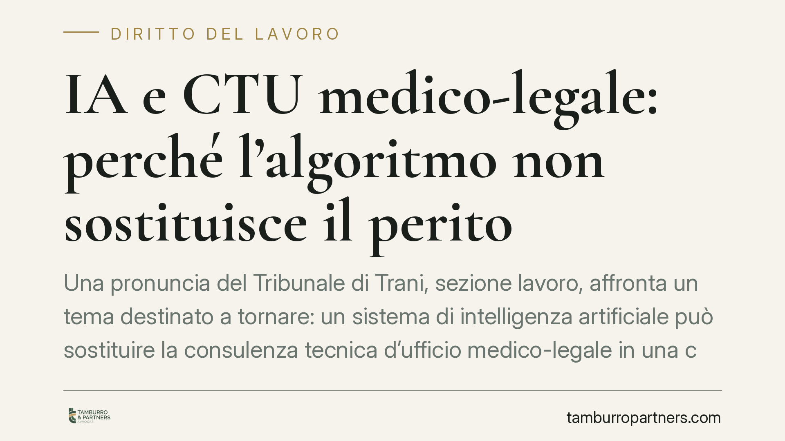

IA e CTU medico-legale: perché l'algoritmo non sostituisce il perito
Una pronuncia del Tribunale di Trani, sezione lavoro, affronta un tema destinato a tornare: un sistema di intelligenza artificiale può sostituire la consulenza tecnica d'ufficio medico-legale in una causa di invalidità? La risposta del giudice è negativa. Il giudizio peritale resta affidato a una valutazione umana, e la semplice divergenza con certificati precedenti non basta a demolirlo.

Il caso
In una controversia previdenziale per il riconoscimento di prestazioni legate all'invalidità civile, si è posta la questione se l'esito di una consulenza tecnica d'ufficio (CTU) medico-legale potesse essere surrogato, o messo in discussione, dall'elaborazione di un sistema di intelligenza artificiale.
Il Tribunale di Trani, sezione lavoro, ha escluso questa possibilità. La CTU — cioè l'accertamento tecnico affidato dal giudice a un esperto per valutare le condizioni sanitarie del ricorrente — non è riducibile a un output algoritmico. Resta un'attività valutativa che presuppone un apprezzamento umano del caso concreto.
Nota sulle citazioni. Al momento della redazione gli estremi completi del provvedimento (numero e data di deposito) non risultano verificabili su fonte ufficiale. Trattiamo quindi la decisione come spunto di merito, non come precedente vincolante: chi intenda richiamarla in un atto deve prima reperirne gli estremi presso la cancelleria competente.
Inquadramento normativo
Il primo riferimento è l'art. 445-bis c.p.c., che in materia previdenziale e assistenziale impone l'accertamento tecnico preventivo (ATP) come passaggio obbligato prima del giudizio. È in questa sede che il profilo sanitario viene accertato dal consulente nominato dal giudice.
Va tenuta distinta la materia dell'invalidità civile (L. 118/1971), che riguarda la riduzione della capacità lavorativa e l'accesso a prestazioni economiche, da quella della L. 104/1992, che disciplina la condizione di handicap (art. 3) e i relativi permessi e agevolazioni (art. 33). Sono accertamenti diversi, con presupposti e parametri propri: confonderli è un errore ricorrente che indebolisce le difese.
Sul piano dei principi, la decisione si colloca nel solco degli artt. 24 e 111 Cost. — diritto di difesa e giusto processo — e richiama l'esigenza che il giudizio tecnico resti presidiato da una valutazione umana. Il Regolamento UE 2024/1689 (AI Act) classifica del resto come ad alto rischio i sistemi di IA impiegati nell'amministrazione della giustizia, imponendo cautele rafforzate.
Quanto alla L. 132/2025, richiamata in sede di merito a sostegno della cosiddetta "riserva di umanità" del giudizio: il principio è coerente con l'impianto costituzionale ed europeo, ma la collocazione testuale esatta della disposizione va verificata direttamente sul testo di legge prima di citarla in un atto, evitando attribuzioni puntuali non confermate.
Implicazioni pratiche
Per chi agisce in giudizio per il riconoscimento dell'invalidità, due indicazioni emergono con chiarezza.
La prima: non ci si può attendere che un sistema automatico "corregga" o superi la CTU. Il perito nominato dal giudice conserva un ruolo centrale e insostituibile.
La seconda, più delicata: la divergenza tra la CTU e i certificati medici prodotti dalla parte non è, di per sé, un argomento sufficiente per screditare la consulenza. Il consulente d'ufficio può legittimamente discostarsi dalla documentazione di parte. Per contestarne le conclusioni occorre individuare vizi specifici — errori metodologici, omesso esame di documentazione decisiva, contraddittorietà interne, mancata risposta ai quesiti — e non limitarsi a opporre una diversa opinione clinica.
In concreto, chi si limita a lamentare che "i miei medici dicono altro" ha poche probabilità di ottenere una rinnovazione della CTU o una decisione favorevole.
Cosa fare in concreto
- Documentate sin dall'ATP. Depositate la documentazione sanitaria completa e aggiornata prima dell'accertamento tecnico preventivo: è la sede naturale per far emergere il quadro clinico.
- Verificate l'inquadramento. Accertate se la vostra posizione rientra nell'invalidità civile (L. 118/1971) o nella condizione di handicap (L. 104/1992): parametri e domande cambiano.
- Contestate i vizi, non le opinioni. Se intendete impugnare la CTU, fate individuare dal vostro consulente di parte vizi metodologici o omissioni specifiche, documentandoli puntualmente.
- Chiedete per tempo i chiarimenti al CTU. Formulate osservazioni tecniche nei termini di legge, prima che l'elaborato diventi definitivo.
- Non affidatevi a valutazioni automatiche. Un report generato da strumenti di IA non ha valore processuale sostitutivo della perizia: usatelo semmai come supporto interno, mai come prova.
Conclusione
La pronuncia conferma un orientamento prudente: l'automazione può assistere, non sostituire, il giudizio tecnico in materia sanitaria. Per il ricorrente ciò significa che la partita si gioca sulla qualità della documentazione e sulla precisione delle contestazioni, non sull'attesa di una scorciatoia tecnologica.
Consigliamo di impostare la difesa fin dalla fase di ATP, con il supporto di un consulente medico-legale di parte.
---
*Contributo informativo a cura di Tamburro & Partners - Avv. Giuseppe Tamburro. Non costituisce parere legale.*
Ogni storia di lavoro ha i suoi tempi.
Se gestisci HR e vuoi un confronto su contenzioso, ispezioni o licenziamenti, scrivi allo studio. Ti rispondiamo entro un giorno lavorativo.